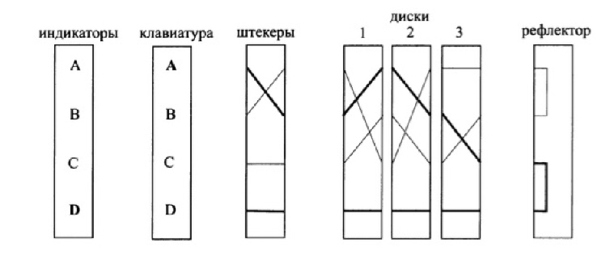

Шифровальные машины
Начало ХХ века ознаменовалось зарождением и созданием нового вида оружия для борьбы за господство на мировой арене — оружия информационного. Важной составляющей государственного управления вооруженными силами стала система связи, которая смогла эффективно влиять на ход военных сражений, непосредственно влиять на систему управления войсками, а иногда и частично выводить ее из строя. Такое оружие сверхопасно для защищенных систем, систем шифрования. В случае, если удавалось завладеть шифрами или ключами к ним, предоставлялась возможность не только владеть информацией, передаваемой по этим линиям связи, а и посылать ложные указания, приказы, зашифровав их шифром противника.[1]
Шифровальная машина "Enigma"
Энигма[2]
Первой роторной машиной шифрования была «Энигма», состоявшая на вооружении Германии во время Второй мировой войны. Она имела три ротора, связанных между собой. При повороте первого ротора соединенное с ним кольцо попадает в паз второго диска и толкает его. Аналогично итерации третьего ротора контролируются вторым ротором. В итоге при каждом нажатии на клавишу машины одна и та же буква кодируется совершенно разными значениями.
При шифровании необходимо было учитывать начальное положение роторов, их порядок и положения колец. Для двойной замены букв используется штекерная панель. Рефлектор осуществляет завершающую подстановку для контроля соответствия между операциями зашифрования и расшифрования. Взгляни на конструкцию «Энигмы»:
На рисунке жирной линией выделено, как буква A вводится с клавиатуры,
кодируется штекером, проходит через три ротора, заменяется на рефлекторе и выходит зашифрованной буквой D.
«Энигма» долгое время считалась неуязвимой. Немцы ежедневно меняли положение штекеров, диски и их компоновку и положение. Во время военных действий они ежедневно кодировали короткую последовательность букв, которая шифровалась дважды и передавалась в самом начале сообщения. Адресат дешифровал ключ и устанавливал настройки машины согласно этому ключу. Именно это многократное использование одного и того же ключа позволило аналитикам из Блетчли-Парка (главного шифровального подразделения Великобритании) взломать немецкий шифр.
На самом деле механизм «Энигмы» не является стойким, так как штекеры и рефлектор выполняют взаимоисключающие операции. Пользуясь частотным анализом для достаточно большого шифротекста, можно подобрать положение роторов брутфорсом. Именно из-за этих уязвимостей «Энигма» остается лишь экспонатом в музее Блетчли-Парка.
Сигаба[3]

Шифровальная машина «Сигаба»
В общих чертах Энигма является прообразом SIGABA, обе машины используют серию роторов для шифрования одного символа в другой. Но если в Энигме использовалось 3 ротора, в SIGABA их было 15. Также в SIGABA не используется рефлектор.
В SIGABA есть 3 фрагмента с 5 роторов в каждом, действия каждых 2 фрагментов контролируются оставшимся.
Главный фрагмент машины называется шифрующие роторы, каждый из которых имеет 26 контактов. Роторы данного фрагмента действовали аналогично другим роторным машинам, таких как Энигма, когда открытый текст письма был введен, сигнал подаётся на вход фрагмента, на выход поступает уже зашифрованный текст письма.
Второй фрагмент машины называется контролирующие роторы. Каждый ротор там также имеет 26 контактов. На каждом шаге роторы получают 4 сигнала. После пропуска сообщения через контролирующие роторы, выходное сообщение разделяется на 10 групп произвольного размера от 1 до 6 контактов. Каждая группа поочерёдно подаётся на вход следующего фрагмента роторов. Третий фрагмент машины называется индексные роторы. Это роторы, меньшие по размеру, имеющие только 10 контактов и не двигающиеся во время шифрования. После пропуска текста через индексные роторы будут включены от 1 до 4 выходов из 5. Они перемещают шифрующие роторы.
Purple[4]
Шифровальная машина «Purple»
В 1937 году было завершено создание нового поколения шифраторов — 97-shiki injiki(九七式印字機, «Печатная машина Тип-97»). Министерством иностранных дел использовалась модификации этой модели Angooki Taipu-B (暗号機 タイプB, «Печатная машина Тип-B»), известная американским криптоаналитикам под кодовым именем Purple.
Главным конструктором Purple был Кадзуо Танабэ (田辺一雄), а его инженерами — Масадзи Ямамото (山本正治) и Эйкити Судзуки (鈴木恵吉). Стоит отметить, что именно Эйкити Судзуки предложил использовать шаговый искатель для повышения криптостойкости.
Шифрование в Purple также основывалось на движении четырех роторов, а секретный ключ задавался один раз в день. Текст вводился с клавиатуры, при помощи роторов заменялся на шифрованный и выводился напечатанным на бумаге. При расшифровании процесс последовательного прохождения через роторы повторялся в обратном порядке. Такая система является совершенно стойкой. Однако на практике ошибки при выборе ключей привели к тому, что Purple повторила судьбу немецкой «Энигмы». Она была взломана американским отделом криптоаналитиков.